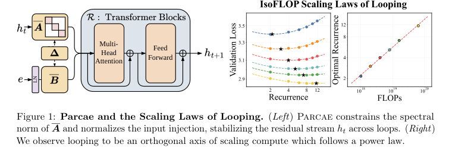
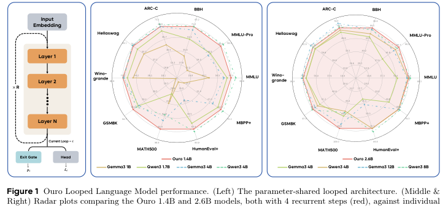

Training and Running Looped Models at Scale
Mainstream models scale test-time compute by producing more output tokens (e.g. Chain-of-Thought). Looped models (like Huginn and Ouro) scale computation implicitly by unrolling a recurrent block to arbitrary depth. Use the slider below to simulate increasing test-time compute loops.
While conceptually elegant, training looped architectures is notoriously unstable. As activations cycle through the same layers, they often suffer from residual explosion and loss spikes.

Parcae fixes training instabilities compared to standard looping methods.
The Parcae framework solves this by recasting looping as a nonlinear time-variant dynamical system. The root cause of instability? Large spectral norms in the injection parameters. By introducing a negative diagonal parameterization, Parcae bounds the spectral norm, creating a stable, looped architecture that achieves lower validation perplexity than prior approaches.
The Ouro model proves that looped models can scale. Trained on up to 7.7T tokens, Ouro introduces an entropy-regularized objective for learned depth allocation. The result? A 1.4B and 2.6B parameter model that matches the performance of standard models up to 12B parameters across a wide range of benchmarks.

Ouro achieves comparable performance to much larger models by scaling latent reasoning.